WaterAlert
How to Use WaterAlert and the Map Interface
This interface provides a map view of the locations of sites with USGS water data. The interface can be used most efficiently by following a few basic rules:- Center and zoom to area of interest.
- Select site types using checkboxes.
- Sites are clickable only when zoomed in enough for accurate selection.
- Specific areas such as USA states and territories can be selected using the drop-down list.
- Named places and addresses can be selected using geographic searching.
How to Subscribe
- Select the Site and Data Type – Use the interactive map to browse the network of USGS real-time sites by data type. If you already know a site by its number, you may map it directly by entering it in the "Select Location" tab. Use the zoom tools to focus on your area of interest. On the map, click on the site's marker for which you would like to get notifications. A small pop-up window will show descriptive information about the site, current values of data, and a button for creating a subscription to WaterAlert. Select that button to open up a form where you can enter informaton for your subscription. You must allow pop-up windows from this site.
- Submit Your Subscription Form – Choose to receive the notifications at either your email address or text-enabled (SMS) mobile phone. Select your desired notification settings; i.e. data type, threshold condition, and frequency.
- Confirm your Subscription – Shortly after you submit your form, a message containing your transaction ID will be sent to the email address you specified. You must reply to this email message, without altering it, in order to confirm and activate your subscription.
- Before you subscribe, please read the Provisional Data Statement and Disclaimer.
- About subscriptions:
- All subscriptions, including text messaging, must be confirmed by return email in order to be activated (details given when you subscribe).
- A subscription is for one data-type parameter and threshold condition per site. You may subscribe to multiple parameters at a site.
- Threshold settings can be changed by submitting a subscription for the same site and data parameter.
IMPORTANT:
How to Manage or Cancel Your WaterAlert Subscription
The various actions for managing your WaterAlerts, such as SIGNOFF (i.e. cancel/delete/stop), LIST, PAUSE, or CONTINUE are performed by sending an email to wateralert@usgs.gov with a Subject of your subscription ID and the action you want to take.
It is not necessary that you recall your subscription ID. To obtain the complete list of actions, with instructions specific to your WaterAlert ID, simply do the following:
- Open one of your WaterAlert text or email messages. In it, you will find a unique web link to a set of instructions for managing that subscription. If it is not clickable, copy and paste it into your web browser:
Examples Text alert Email alert 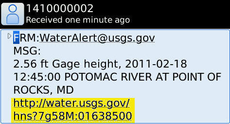 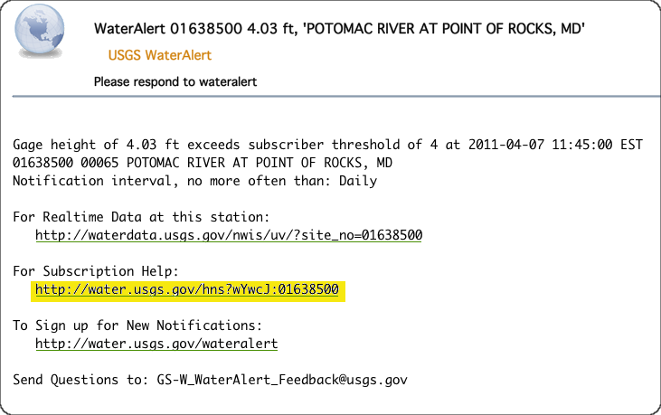 - Follow your customized instructions or simply click on the link provided within, for the action you want to take.
ALL your WaterAlerts by submitting this request:
Selecting a Location
|
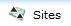 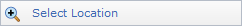 |
The Mapper provides several alternatives to selecting an area to view. The Navigation Controls explained below can be used to select areas directly on the map. The default selection is the lower-48 USA states. The Select Location tab on the left panel provides several Map Search options for views based on a named location or major watershed. |
|
Search by Place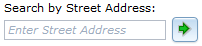 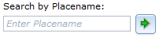 |
This option selects an area using a street address or place name, and is useful for viewing close to a specific point of interest. The preferred method can be specified using the drop-down menu. Searching by place name (e.g. Fargo, ND) is most effective when a specific address is not available, and will create a viewing extent that brackets the named place. Searching by street address will usually result is a closer view, and will create a view that is centered on the address. Either search will also accept just a Zip Code. |
|
Search by Site Number(s)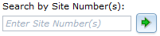 |
This option selects an area using one or more site numbers. If one number is entered the view will be centered on that site. If more than one number is entered, separated by commas, the view will use the spatial range of the sites to determine the view. |
|
Search by State or Territory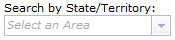 |
This option selects a particular U.S. State or territory by name from a list, and is useful for quickly viewing a larger area. The map view will be centered on the area and include at least all area inside its official boundaries. |
|
Search by Watershed Regions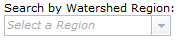 |
This option selects a major watershed region by name from a list, and is useful for quickly viewing a larger area. The map view will be centered on the area and include at least all area inside its official boundaries. |
Selecting a Data Type
|
The National Water Information System (NWIS) provides access to data at over 1.5 million sites. There are 56 possible site types used in the NWIS data base, including 14 primary and 42 secondary types. To simplify mapping of the site locations for most practical applications, the site types are displayed in groups that include the following primary and secondary types. The full list of site types can be found here.
At any given site, one or two types of data may be available. Level of flow data will be available at most surface-water, groundwater, and spring sites; and precipitation data will be avaliable at atmospheric sites. Some sites may have data from water-quality samples. The default selection is level, flow, or precipitation. These selections are only active when sites are clickable. |
|||||||||||||||||
 Surface-Water Sites
Surface-Water Sites Groundwater Sites
Groundwater Sites Springs Sites
Springs Sites Atmospheric Sites
Atmospheric SitesDisplaying Sites
Explanation below is for zoom levels in which sites are not
clickable.
|
Explanation below is for zoom levels in which sites are
clickable.
|
The Mapper displays clickable sites only at smaller scales in the map view (zoom level 8 or greater). This approach provides a reasonably fast drawing time. The display of each of the site types can be turned on and off using the checkboxes. Multiple site types can be displayed concurrently. Shapes and colors are also used to indicate the type of data collected at sites. Black triangles and gray colors represent surface-water sites, black dots and red colors represent groundwater sites, black dots with a tail and purple colors represent springs, and black diamonds and blue colors represent atmospheric sites. At some locations there are multiple sites. These are indicated by a Multiple Sites mapping symbol. The full explanation of symbols for a site type will only appear when that site type tab is selected. |
||||||||||||||||||||||||||||||||
 Surface‑Water Sites
Surface‑Water Sites Groundwater Sites
Groundwater Sites Spring Sites
Spring Sites Atmospheric Sites
Atmospheric SitesSelecting a Site and Getting Data
| 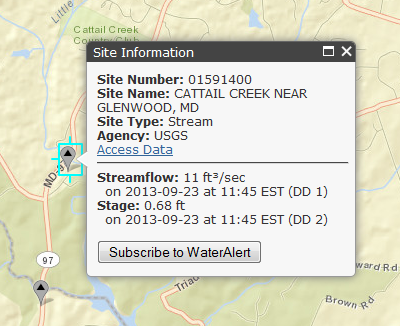 |
Controls in this section only apply at zoom levels where sites are clickable. Selecting (clicking) the site will identify it by site number and name. A link is also provided to access any available data from the National Water Information System. Multiple links are provided in cases where there are multiple sites at one location. Current values of data are listed below the site description. Select the Subscribe to WaterAlert button to open up a form where you can enter informaton for your subscription. |
Map Layers - Background Views
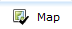
Map Layers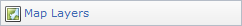
|
Several additional layers of information are available to complement the display of sites using the Map Layers selection under the Map Layers tab. Note that map layer views are appropriate to and will vary with map scale. |
|||||||
Base Maps
|
The default background view is an ESRI Streets map. Several background map types are available and can be selected using the Base Maps selection under the Map Tools tab. More information on each base map is available at ESRI Map Services, or by selecting the link on the left to particular base maps. All uses of ESRI base maps are subject to their Terms of Use. Note that background views are appropriate to and will vary with map scale. Not all views are available at all scales, particularly when zoomed in very close to a location. |

 Water Scence Center
Water Scence Center Navigating in ESRI Maps
You can navigate (move your view) in two dimensions in any ESRI Map. To pan (move the map), do one of the following:- Click and hold the mouse buttons to drag the map
- Press the up arrow on your keyboard to move north
- Press the down arrow on your keyboard to move south
- Press the right arrow on your keyboard to move east
- Press the left arrow on your keyboard to move west
Using the Navigation Controls
 |
On-screen zoom controls are shown on the left. Zoom controls include:
Additional controls are described below and are provided to set the function of the cursor and to select map views. 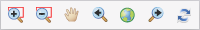
|


Map Tools
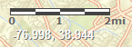Scale Bar
The scale bar shows a graphic map scale for estimating distances. The scale bar is shown using line weights and colors that can be read easily on most base maps, including the default. In some cases, the scale bar may be easier to distinguish on an alternative base map, particularly one with a lighter color.Longitude and Latitude Coordinates
The longitude and latitude of the cursor position are shown in decimal degrees. Note that when obtaining the coordinates of a data site the map symbol, including its shadow, is centered over the exact coordinates of the data site -- at zoom levels of 15 or more, there is no discernable difference in coordinate values at any point on the map symbol. The coordinates are shown using a font weight and color that can be read easily on most base maps, including the default. In some cases, the coordinates may be easier to distinguish on an alternative base map, particularly one with a darker color.Using the Overview Map
 |
The overview map (shown left here)
appears in the bottom right corner of the map. It helps to orient
you by showing the location of current map view in the context
of a larger geographical area. The area currently displayed
in the map is show as a purple box in the overview map. At any
time, click to hide the
overview map or click
As you pan or zoom in the map, the overview map view changes accordingly. You can change the existing view in the map by doing one of the following:
|